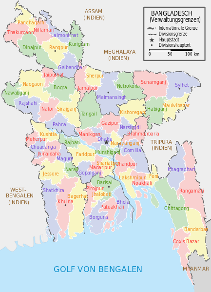

About the Instructor:
Hello, my name is Mukto Akash. Welcome to COMP1631: Advanced Spreadsheets.
This course is designed to build on introductory spreadsheet concepts. Students participate in hands-on training activities that include the creation of: advanced formulas, templates to automate and validate data entry and using wizards and queries to import data into Excel. A variety of analysis tools will also be explored in this course.
Examples of how I use Excel at my work.
- Payroll
- Mail Merge Macro
- Service Data Analysis
- Dashboard
- Statistical Analysis
Why should I teach this course, and why would you learn from me?
- Passion for teaching
- Years of Experience
- Excellent Grades
Words of Wisdom, also known as "what you should learn from me?".
- Putting in the right amount of effort to get the best grade that you can.
- Learning an extremely valuable skill that you would need throughout your career.
- Tricks and Tips that you won't find in the book.
Getting personal: who am I?
- Once upon a time I was an international student from Bangladesh.  Speak and understand several languages.
- Completed BSc and MMath from University of Waterloo. Then taught there for ten years. Currently work at Conestoga College as a Math Consultant.
- Live in Waterloo. Have two wonderful children and a great wife. Hobbies include programming and repairing old computers.